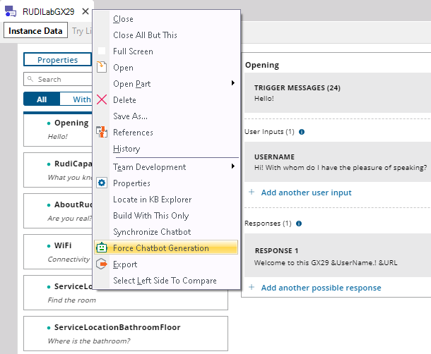

To force the process of refreshing the Conversational Flows object, right-click on the Conversational Flows tab, and select Force Chatbot Generation menu option. In the generation process, the instance is refreshed (so the objects of the pattern are generated).  When you select the Generate Chatbot action, if the Chabot module isn't installed, or if it isn't updated, it will be installed / updated. Besides, if the resources aren't installed or if they are not updated, they will be installed / updated after prompting the user (according to the value of the Keep Resources Updated property). Note: The instance is synchronized with NLP provider according to the value of the Synchronize On Save property. AvailabilitySince GeneXus 17 See also |